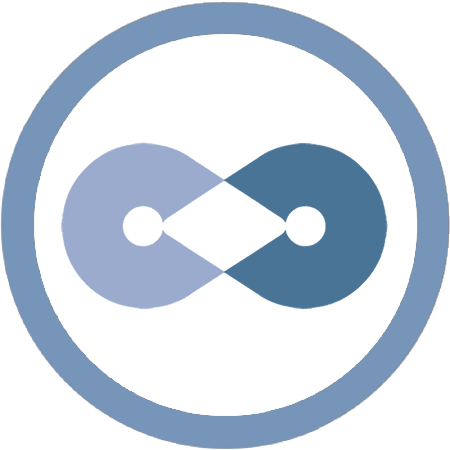

Dasset FS
A FINANCIAL SYSTEM
Dasset is a digital asset emulator built in Quarkonium system to simulate the lifecycles of digital assets.
Introduction
This project invents a digital asset emulator with a cluster of framework tools. Developers are able to customize Dasset software frameworks and deploy the system-wide Dasset applications in their own system as part of the Quarkonium ecosystem.
The aim of the project is to create prototypes of cyberspace constitutional (federal) facilities, and to be adopted by compatible cyber communities.
A Digital Asset Market
- Digital Asset Omnificence
- Digital Asset Platform
An Autonomy of Regulation
- Digital Identity
A Federal Reserve System
- Digital Asset System
Miscellaneous
Project collaboration extends from teamwork, coalition, partnership, etc. to spontaneous cooperation among virtual units.
Dasset Lab
Dasset Lab, a team of Quarkonium Foundation, pioneers the development of the core systems, organizes the ecosystem communications, maintains the collaboration among communities, approves and supports any significant roadmap.
Communities & Collaboration
- Social networking systems
- RPG Gaming societies
- Cryptonomic societies
- Blockchain societies
- Algobet Labs · Github · Gitlab
Contact
- Website: http://d.algobet.org
- Slack: dasset.slack.com
- Email: dasset@algobet.org
Logos & Copyrights
- Logo: 
- Copyright: © 2018 Dasset, An Algobet Labs Project